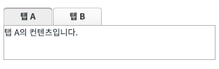
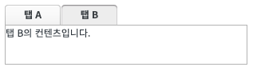
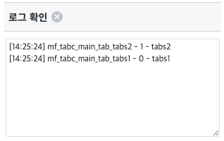
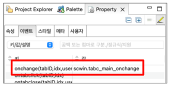

TabControl의 onchange 이벤트 예제입니다. onchange 이벤트는 TabContol의 탭을 선택해서 선택된 탭이 바뀐 경우 발생하는 이벤트입니다. 이벤트의 매개변수로는 tabID, idx, userTabID가 입력되며 각각의 설명은 아래와 같습니다. tabID: 변경된 탭의 엔진 내부에서 사용하는 ID idx: 변경된 탭의 Index userTabID: 변경된 탭의 사용자가 지정한 ID(addTab API 사용한 경우 옵션 값 중 ID값에 해당)
선택 된 탭 변경 시 onchange 이벤트를 활용해 탭 정보를 확인한다.
STEP 1. 초기 상태를 확인합니다.
해당 예제의 TabControl은 기본 설정 상태로 첫 번째 탭이 선택된 상태입니다.
그림 1.브라우저(Chrome) 실행 예시

STEP 2. 탭 B를 클릭해 선택 된 탭을 변경합니다.
onchange는 선택 된 탭이 변경되어야 발생하는 이벤트이기 때문에 원래 선택된 탭이 아닌 다른 탭을 선택해야합니다.
그림 2.브라우저(Chrome) 실행 예시

STEP 3. 로그 영역에서 결과를 확인합니다.
탭이 변경 될 때 아래 형태로 로그를 출력합니다. "tabID - index - userTabID"
그림 3.브라우저(Chrome) 실행 예시

STEP 1. TabControl의 이벤트를 정의 합니다.
TabControl을 선택해서 onchange 이벤트 함수를 정의 합니다.
그림 4.property 이벤트 예시

[필수] scwin.tabc_main_onchange = function (tabID, idx, userTabID) //onchange 이벤트가 발생 할 때 실행할 함수를 지정합니다.
[소스 코드 예시] - 영역 [Event: onchange]
// TabControl의 onchange 이벤트 scwin.tabc_main_onchange = function (tabID, idx, userTabID) { // 로그 출력 let strLog = tabID + " - " + idx + " - "+ userTabID; $c.frame.printExampleLog(strLog, txa_log, false); console.log(strLog); };
<w2:tabControl id="tabc_main" ... ev:onchange="scwin.tabc_main_onchange"> // 중략 </w2:tabControl>
onchange(tabId, idx, userTabId)